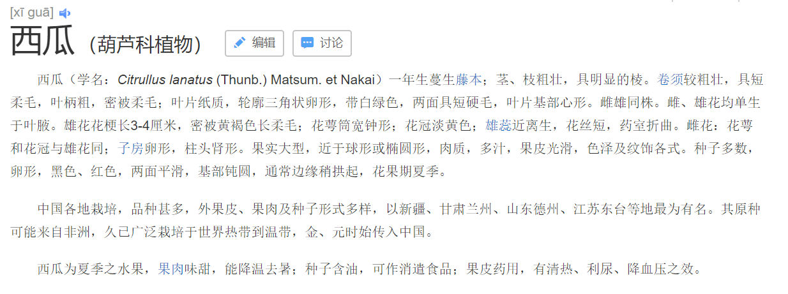
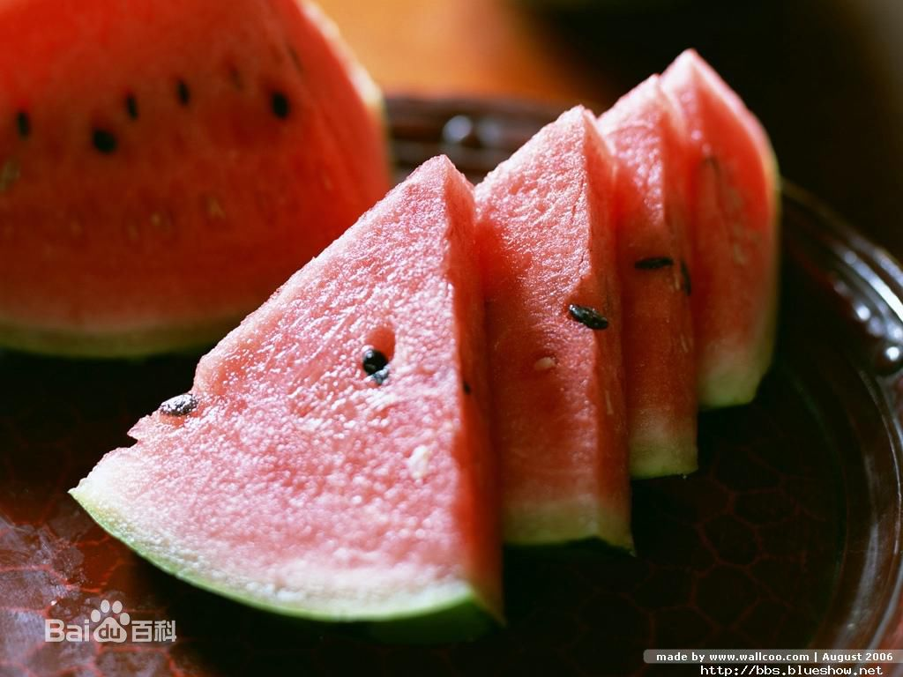

二、Java基础-编程语言特性
(一)结构化编程和面向对象编程
- 结构化
结构化编程在于功能分解，从目标系统的整体功能中单个功能，一层一层的按照复杂到简单。结构化编程本质是对事物的过程进行分析和处理的，结构化编程本质也就是面向过程编程。
用面向过程的方法写出来的程序是一份蛋炒饭
优点：性能比面向对象高，比较消耗资源;比如单片机、嵌入式开发、 Linux/Unix等一般采用面向过程开发。，面对功能固定的长时间不改变的系统时，要更适合
缺点：没有面向对象易维护、易复用、易扩展
- 面向对象
而用面向对象写出来的程序是一份盖浇饭。
优点：易维护、易复用、易扩展，由于面向对象有封装、继承、多态性的特性，可以设计出低耦合的系统，使系统 更加灵活、更加易于维护 缺点：性能比面向过程低
蛋炒饭的好处就是入味均匀，吃起来香。如果恰巧你不爱吃鸡蛋，只爱吃青菜的话，那么唯一的办法就是全部倒掉，重新做一份青菜炒饭了。盖浇饭就没这么多麻烦，你只需要把上面的盖菜拨掉，更换一份盖菜就可以了。盖浇饭的缺点是入味不均，可能没有蛋炒饭那么香。
(二)类与对象
Java 是面向对象的高级编程语言，类和对象是 Java 程序的构成核心。
类是抽象化的事物，是用来描述特定事物的特有属性和方法以及关系。而对象是类的实例。
类的是说我们在书本上描述的西瓜的食物，抽象的聚合体，是概念

对象是我们在生活中买到的实物

同时类也相当于工厂的摸具，可以套着他去制造一个又一个的实例对象。
在类中，属性是对象所具有的特征，而行为是对象可以做的工作。
对象的每个属性表示为类中的一个成员变量，而对象的每个行为表示为类中的一个方法。
(三)面对对象编程特性
围绕着 Java 类和 Java 对象，有三大基本特性：封装是 Java 类的编写规范、继承是类与类之间联系的一种形式、而多态为系统组件或模块之间解耦提供了解决方案。
封装
封装的核心思想是隐藏实现细节：调用者不需要知道功能的实现方法和成员变量，而是提供公共的方法来实现。从而保证了数据的安全和程序的稳定。
x测试类，代码如下：public class ClassName{//成员变量//构造方法//无参构造方法【必须】//有参构造方法【建议】//成员方法//getXxx()//setXxx()}public class Student {//成员变量private String name;private int age;//构造方法public Student() {}public Student(String name,int age) {this.name = name;this.age = age;}//成员方法public void setName(String name) {this.name = name; }public String getName() { return name; }public void setAge(int age) { this.age = age; }public int getAge() { return age; } }继承
多个类中存在相同的属性和行为时，将公共的内容放入同一个类中，那么多个类无需再定义这些属性和行为，只要继承那一个类即可拥有公共的内容。如图所示：

定义 继承：就是子类继承父类的属性和行为，使得子类对象具有与父类相同的属性、相同的行为。子类可以直接 访问父类中的非私有的属性和行为。
好处
- 提高代码的复用性。
- 类与类之间产生了关系，是多态的前提。
多态
多态是继封装、继承之后，面向对象的第三大特性。 生活中，比如跑的动作，小猫、小狗和大象，跑起来是不一样的。再比如飞的动作，昆虫、鸟类和飞机，飞起来也 是不一样的。可见，同一行为，通过不同的事物，可以体现出来的不同的形态。多态，描述的就是这样的状态。
xxxxxxxxxxpublic abstract class Animal {public abstract void eat();}
xxxxxxxxxxclass Cat extends Animal {public void eat() {System.out.println("吃鱼");}}class Dog extends Animal {public void eat() {System.out.println("吃骨头");}}
xxxxxxxxxxpublic class Test {public static void main(String[] args) {// 多态形式，创建对象Cat c = new Cat();Dog d = new Dog();// 调用showCatEatshowCatEat(c);// 调用showDogEatshowDogEat(d);/*以上两个方法, 均可以被showAnimalEat(Animal a)方法所替代而执行效果一致*/showAnimalEat(c);showAnimalEat(d);}public static void showCatEat (Cat c){c.eat();}public static void showDogEat (Dog d){d.eat();}public static void showAnimalEat (Animal a){a.eat();}}